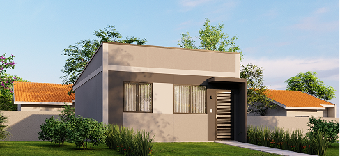
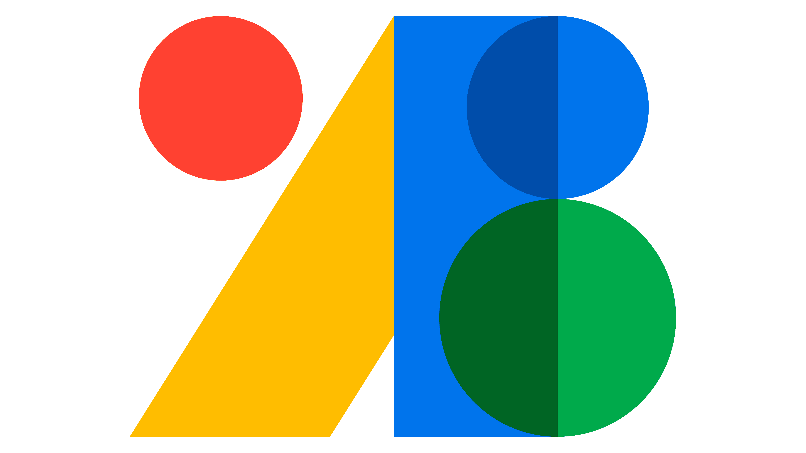

Estratégia
A review of vibration-based structural health monitoring with special emphasis on composite materials.
24 Out, 2023
LER ARTIGO
Explore as fontes que inspiraram a criação do projeto YESOD e também dem base para que o mesmo se desenvolva-se.
O artigo propõe um sistema de monitoramento estrutural que usa vibração e ultrassom para detectar automaticamente danos internos comparando a resposta dinâmica atual de estrutura com a resposta de uma estrutura saudável.

O site do MAGEN foi construído do zero, com tecnologias web essenciais e o apoio de inteligência artificial.
Linguagem de marcação que define o conteúdo e a estrutura de todas as páginas do site.
Responsável pelo layout, cores, responsividade e pelo modo escuro do site.
Dá vida às páginas: menu mobile, alternância de tema, animações e o jogo.

Biblioteca gratuita de fontes usada para a tipografia do site, com as famílias Inter e DM Sans.
Assistente de IA da Anthropic que ajudou na criação, revisão e melhoria do código e dos textos.
Ferramenta de design colaborativo usada para criar os layouts e protótipos das telas antes de programar.
Editor de código da Microsoft onde escrevemos e organizamos o HTML, o CSS e o JavaScript do site.
Plataforma que guarda o código do projeto e o histórico de alterações, facilitando o trabalho em equipe.